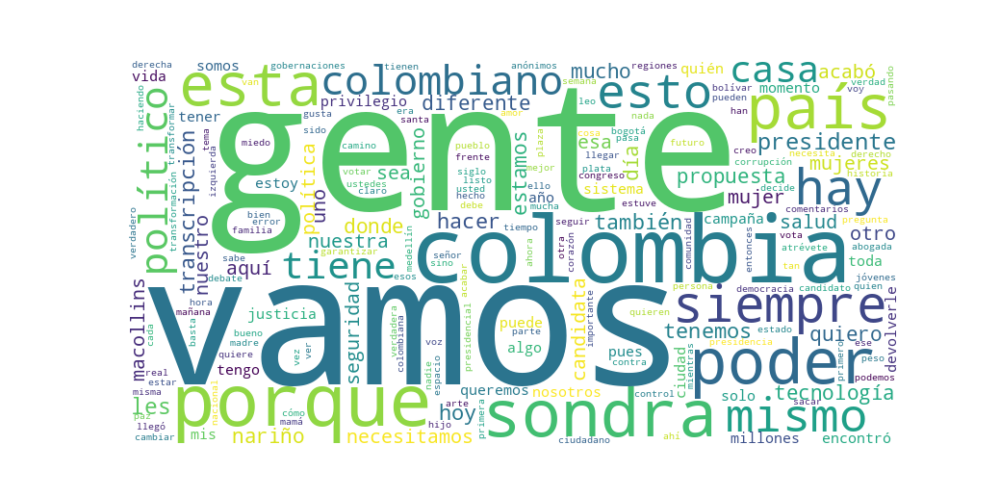

Seguidores: 92,252
1. Perfil de Comunicación: Sondra Macollins emplea un estilo de comunicación predominantemente informal, cercano y directo, orientado a construir una conexión emocional con el electorado. Utiliza un lenguaje popular y coloquial (ej: "berraco/a", "parce", "chévere"), salpicado de jerga juvenil y digital ("fucking vibra"), lo que busca resonar con ciudadanos comunes y desmarcarse de la "clase política tradicional". Su tono es conversacional, con frecuentes preguntas retóricas, llamados a la acción ("atrévete", "rebélate") y uso intensivo de emojis y hashtags. Aunque es abogada, evita deliberadamente un discurso técnico o académico, optando por un lenguaje simple, emocional y cargado de eslóganes repetitivos.
2. Temas Principales: 1. Antipolítica y Poder Ciudadano: El eje central de su discurso. Denuncia constantemente a "los mismos de siempre", a "las familias políticas" y al "establishment" (izquierda y derecha), presentándose como la "candidata anónima" que devolverá el poder a "la gente", los "invisibles" y los "ciudadanos de a pie". * Ejemplo: "Los mismos de siempre se repartieron el poder... Yo me atrevo a romper el sistema. No más privilegios a los de siempre. La derecha ni la izquierda el poder es de la gente." 2. Corrupción y Transparencia: Ataca la corrupción estructural, los privilegios de la clase política (salarios, pensiones, salud VIP) y la opacidad en el manejo de recursos. Propone soluciones tecnológicas como eje principal. * Ejemplo: "¡No más política de bolsillo! Necesitamos transparencia absoluta en tiempo real... Con ayuda de la Inteligencia Artificial podrás auditar cada peso." 3. Reforma del Estado y Tecnología: Propone transformaciones radicales del aparato estatal, presentando la tecnología como panacea. Sus propuestas bandera son eliminar las 32 gobernaciones, reducir el Congreso en un 33% y usar blockchain/IA para auditoría en tiempo real. * Ejemplo: "Eliminemos las 32 gobernaciones que son un peaje de corrupción al desarrollo... La tecnología es la clave para llevar a Colombia al siguiente nivel." 4. Seguridad y Justicia: Aborda la inseguridad con un tono de mano dura, criticando la "Paz Total" por generar impunidad. Propone militarización de vías, tecnología de vigilancia masiva (cámaras, reconocimiento biométrico) y una reestructuración total del sistema judicial. * Ejemplo: "Exigimos al gobierno nacional la militarización inmediata de las vías... La justicia en Colombia fracasó porque la justicia se politizó."
3. Tono y Sentimiento Dominante: El tono general es crítico, confrontacional y de ruptura. Predomina un sentimiento de indignación hacia la clase política y un llamado a la rebelión cívica. Si bien hay momentos propositivos (especialmente al hablar de tecnología) y esperanzadores ("un camino diferente"), la energía discursiva se alimenta del rechazo y la denuncia. Es un discurso diseñado para capitalizar el descontento y el cansancio ("hartazgo") con el sistema.
4. Palabras Clave de Poder: * "Devolverle el poder a la gente" / "El poder es de la gente": Consigna central y repetida obsesivamente. * "Los mismos de siempre": Enemigo abstracto y recurrente (políticos tradicionales, izquierda/derecha). * "Los anónimos" / "Los invisibles": Colectivo al que dice representar. * "Se les acabó": Frase de victoria y cierre de ciclo. * "Atreverse" / "Rebelarse": Llamado a la acción emocional. * "#TodosALaCasaDeNariño": Hashtag omnipresente que simboliza la toma del poder. * "Tecnología" / "Actualizar el país" / "Siglo XXI": Solución mágica y diferencial. * "Privilegios": Palabra carga para atacar a la clase política.
5. Conclusión Estratégica: La estrategia de comunicación de Sondra Macollins es la de un outsider antisistema que canaliza el malestar y la desconfianza hacia la política tradicional. Se dirige explícitamente al electorado desencantado, joven y urbano (evidenciado por el uso de plataformas como Instagram, lenguaje digital y alianzas con influencers/gamers), así como a aquellos que se sienten excluidos del reparto de poder. Su discurso busca evocar indignación, identificación ("ella es como nosotros") y una sensación de empoderamiento simple ("tu voto saca a los corruptos"). Más que un programa detallado, vende una narrativa emocional de ruptura, donde ella es el vehículo para que "la gente" tome finalmente el control, utilizando la tecnología como el instrumento redentor y modernizador. Es una campaña que apuesta por el sentimiento sobre el detalle, la consigna sobre el complejo análisis de políticas.
Reporte Estratégico de Comunicación: Análisis del Corpus de Éxito
1. Resumen del Patrón de Éxito: El éxito de la comunicación se basa en una fórmula dual de confrontación emocional y conexión humana. Los videos más exitosos combinan un tono de denuncia fuerte y moralmente indignado contra el "establishment" político y la corrupción, con momentos de autenticidad personal y cercanía cotidiana. No es un discurso técnico, sino una narrativa emocional que posiciona a la candidata como la voz franca y valiente que "dice lo que otros callan", mientras intercala pinceladas de su vida privada para construir una figura accesible y real.
2. Tácticas de Comunicación Clave:
* Contraste Maniqueo y Definición del "Enemigo": Construye su narrativa sobre una dicotomía clara: "Ellos vs. Nosotros". "Ellos" son los políticos de siempre, un bloque homogéneo caracterizado por la corrupción, el clientelismo (compra de votos), la negligencia (procesos que se vencen) y las maquinarias políticas. Este contraste es su columna vertebral.
* Apelación a la Indignación Moral y la Esperanza de Ruptura: El principal motor emocional es la indignación, dirigida contra hechos concretos (vínculos con narcos, compra de votos, impunidad). Paralelamente, evoca una esperanza de cambio radical ("atrevernos a votar diferente", "hagamos algo diferente"), presentándose como el vehículo único para esa ruptura limpia con el pasado.
* Personalización Dual: La Abogada y La Vecina: Utiliza dos facetas personales clave: 1) La profesional jurídica que desglosa fallas sistémicas (artículo 386 del Código Penal, estructura del sistema judicial) dando peso técnico a su denuncia. 2) La persona común que muestra su espiritualidad (velitas, incienso), su familia y hasta gatitos para adoptar, generando identificación y rompiendo la barrera político-ciudadano.
* Llamados a la Acción Engagante y Preguntas Retóricas: No solo pide el voto. Fomenta interacción directa con preguntas que invitan al debate y la reflexión personal (¿Te vendes o te respetas?, ¿Qué vas a hacer para reconectar?), transformando al espectador en un interlocutor activo.
3. Temas de Mayor Resonancia:
1. Corrupción y Cáncer del "Sistema": Es el tema central. Lo enfoca desde casos específicos (Bonilla, Roa, compra de votos) hasta una crítica estructural al "Frankestein" judicial y político.
2. Justicia e Impunidad: Como abogada, atacar la ineficacia e impunidad del sistema judicial (la justicia no falla, la hacen fallar) es un pilar de su credibilidad y su promesa de renovación.
3. Renovación Política vs. "Los de Siempre": La necesidad de una limpieza total de la clase política tradicional es un leitmotiv. Se presenta como la única candidata independiente, sin padrinos, maquinarias o "20 años en la política".
4. Contraste Social y Realidad Nacional: Temas como la salud (62,000 pacientes sin salud) y la desigualdad (el video de Semana Santa que contrasta la fe vs. el rebusque) enmarcan su discurso en la realidad cotidiana, no en abstracciones ideológicas.
4. Perfil de la Audiencia Implícita: El lenguaje apunta a una audiencia frustrada y desencantada con la política tradicional, que valora la autenticidad por encima de la pulcritud retórica. Se dirige tanto a: * La base anti-establishment: Ciudadanos que sienten rabia e impotencia frente a la corrupción y buscan una opción de protesta viable y concreta. * El votante emocional y moral: Personas que toman decisiones basadas en valores de honestidad, justicia y una fuerte dicotomía ética (bueno/malo). * Un segmento joven y digital: El uso de Instagram, el lenguaje directo, los llamados a comentar y el contenido "blando" (gatitos, espiritualidad) buscan conectar con una generación que desconfía de los formatos políticos tradicionales.
5. Conclusión Estratégica: La potencia de su discurso radica en sintetizar la ira del denunciante con la calidez de la conversación entre vecinos. Logra un equilibrio peligroso y efectivo: no es solo un discurso de ataque (lo que la haría parecer solo confrontacional), ni solo un discurso personal (lo que la haría parecer ligera). Es ambas cosas. Su poder diferenciador frente al discurso político tradicional es triple: 1. Autenticidad Percibida: Se presenta como una persona "real", fuera de la burbuja política, que habla con la gente, no a la gente. 2. Claridad Moral Simplificadora: Reduce problemas complejos a una lucha entre "lo corrupto de siempre" y "la honestidad nueva", ofreciendo un marco cognitivo simple y potente para el electorado frustrado. 3. Dominio del Código Digital: Entiende que en redes sociales la emoción prima sobre el detalle, la interacción sobre el monólogo, y la imagen personal íntima sobre la foto institucional.
En esencia, su éxito no está en un programa de gobierno detallado, sino en encarnar de manera creíble el personaje de "la ciudadana honesta que se atreve a enfrentar al sistema podrido", mientras comparte su lado humano para que el elector quiera acompañarla en esa cruzada.

Caption: Miles de pacientes sin salud en Córdoba 😷 Esta es la realidad que nos han dejado los políticos de siempre. ¡Vamos a atrevernos a votar diferente! #SondraConO #TodosALaCasaDeNariño #Salud #SondraMacollins
Likes: 103 | Comentarios: 135 | Reproducciones: 1,126
Ver en InstagramCaption: Te quieren comprar, así de simple, Santiago Botero regalando 25 millones y Abelardo de la Espriella regalando viajes al mundial… no es regalos, es control, es corrupción. Hoy te dan plata, mañana te quitan la voz y sigue el mismo sistema de corrupción de los de siempre. Comenta ¿Te vendes o te respetas? 👇 #SondraConO #SondraMacollins #EleccionesPresidenciales #CompraDeVotos
Likes: 2,278 | Comentarios: 641 | Reproducciones: 25,965
Ver en InstagramCaption: ¡La denuncia de @noticiascaracol sobre los posibles vínculos entre #Petro y alias #PapáPitufo es gravísima! 😠 Esto es una amenaza contra la democracia. Exijo que se muestren todas las pruebas y que la verdad sea contada al país. #SondraConO #SondraMacollins #TodosALaCasaDeNariño
Likes: 166 | Comentarios: 145 | Reproducciones: 1,903
Ver en Instagram